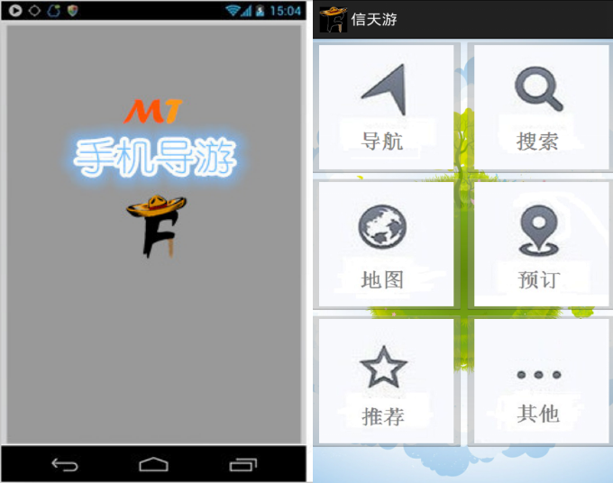

-
Java菜鸟学习网站
2015年来到了中科软工作，在试用期的时候，很轻松的完成了任务，在当时的项目经理的鼓励下，开始写出这个网站
资源下载：http://pan.baidu.com/s/1hr8ongo（非Maven版，包含所有jar包） 密码：xomj
资源下载：http://pan.baidu.com/s/1dERrnB7（Maven版） 密码：7kp4
-
手机APP“信天游”
该项目为我的小组参加电子商务竞赛作品，手机APP由我单独开发。其中我学会了搭建Android开发环境，使用各种控件，以及调用百度API。实现了百度地图的应用（搜索地点、路线），语音导游，经典展示等功能。该项目获得浙江大学生电子商务竞赛省赛一等奖，全国大学生电子商务竞赛三等奖。

资源下载：http://pan.baidu.com/s/1i4HFD69 密码：isik
-
交互式外包项目管理系统
该项目与“信天游”的开发同时进行，为我的小组参加软件外包大赛的作品，系统编码由我独自开发。主要功能实现了对外包项目的管理，员工可以根据拥有的技能匹配可选的项目，项目也可以根据需要的技能挑选合适的员工。系统使用了SSH框架，以及Hibernate的多对多映射。该项目获得软件外包大赛的优秀奖。
-
宿舍管理系统
大学的专业是“计算机科学与技术”，学习的主要内容是C语言系列。当时的“软件工程”课程需要小组完成一个项目，大部分同学用的都是C#写的，为了出奇制胜，我们决定使用Java来写。当然有漂亮的美女小组长在，不管干什么都特别卖力，一扫懒散作风，通宵了好几天。其实那时我也并不懂Java，只是跟队友打ACM比赛，使用过几次而已，也听说用它写网站比较好。
在“系统开发实训课程”上，帅哥讲了C#三层架构的MVC模型，可是初探Java却并不知道类似SSH这种架构的东西，只用jsp实现数据的增删改查。现在想来，当年的怎么会那么有耐心，一页一页的拷贝。最终在各位的不懈努力下，赶在学校那著名相声演员小云竹子的审核前完成。